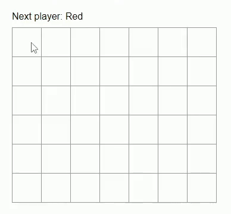
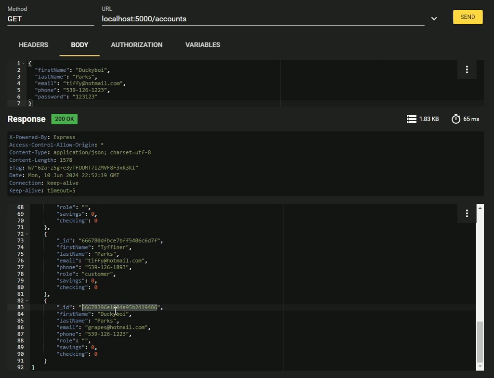
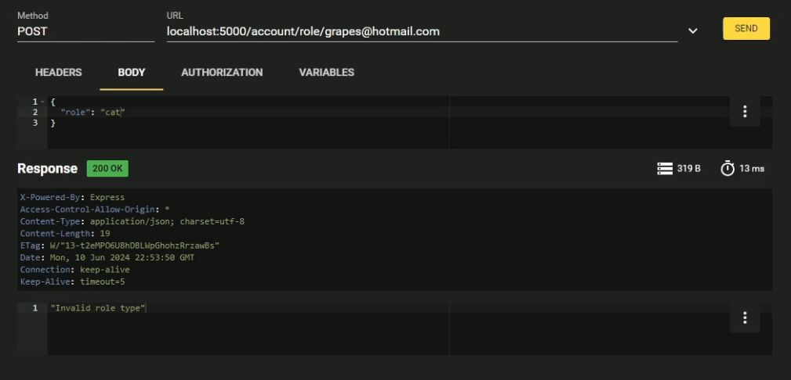

Alayna Myers
she/they
About Me
Hello! My name is Alayna Myers, and I'm a CS student up at Weber State University in my final year of undergrad. I've done two consecutive Summer Internships at HAFB as a part of their SMART Scholarship Program, and my work there mostly involved working within Blender and Unreal engine. This has really built a passion for learning more about rigging 3D models, photogrammetry, and procedural generation.
I am excited to share my work with you through my portfolio. Feel free to explore my projects below!
Node/Express Site with File Storage
Description: For this project the goal was to simply get practice working the basices of Node and Express. This involved creating a Node/Express website that has the following features:
- An HTML form to collect a user's first name, last name, and favorite food. This data is stored in a text file on the backend.
- A route that reads the stored data from the text file and dynamically generates an HTML page to display all information.
- A second HTML form that allows users to search for people by their favorite food and displays matching results.
- A clean layout with routes and pages organized into appropriate folders.
Technologies Used: Node.js, Express.js, HTML, CSS, Visual Studio Code
Technical Challenges: I struggled a bit at the beginning with getting all the npm packages to install correctly, and had to trouble shoot some issues caused by empty lines not being removed from the data file. Both were easy fixes, although the npm installation issues did require some googling to figure out.
My Contributions: This was a solo project, which included setting up the user.js route, creating a userinfo.txt file to store data, and making 2 basic frontend html forms for the user to interact with.


Four In a Row Game
Description: This project involved extending some given code for a simple tic-tac-toe game into a fully functioning connect four game, utilizing React. It needed to include the following features:
- A 6x7 grid board where players take turns to drop their tiles into a column.
- Clicking in a column "drops" a user's tile into that column if an open spot exists. If the column is full, the user's click does nothing.
- Game logic to detect 4 in a row situations horizontally, vertically, and diagonally. The game announces the winner and prevents further play once a winner is detected.
- Detection of a tie game when the board is full and no winner is declared.
- Automatic switching between players after each tile placement.
Technologies Used: React.js, HTML, CSS, JavaScript, Visual Studio Code
Technical Challenges: It took me a bit to fully wrap my head around the best way to implement the array storage for keeping track of where each player went, along with how specifically to traverse said away to check for diagnol wins. I did this by implementing a 2D array and utilizing for loops to check through different "directions" in the array (i.e. I had a sperate array containing x,y values that would specify how the loops should move through the game board array).
My Contributions: I did all the work for this project, albeit building off of the base tic-tac-toe code. This included editing css styling and creating all the logic for full gameplay.
Node, Express, Mongo, and RESTful API
Description: This project focused on creating a Node/Express/Mongo backend for a simple banking system. The backend includes the following features:
- A user account system that allows for creating new accounts with fields such as first name, last name, email address (used as the username), phone number, and password.
- Validation to ensure that email addresses are unique across accounts.
- APIs to check if a given email/password combination is valid, retrieve all user accounts, and retrieve details of a specific user account by email address.
- Functionality to update an account's role (customer, manager, or administrator) based on the associated email address.
- APIs for depositing money into either checking or savings accounts, with amounts managed as integers in total cents for precision.
- Withdrawal functionality that ensures no account goes into a negative balance, with appropriate success or failure responses.
- Money transfer functionality between checking and savings within the same account, with validation to prevent overdrafts.
Technologies Used: Node.js, Express.js, MongoDB, Mongoose, RESTful API, Visual Studio Code.
Technical Challenges: The main learning curve for this one was utilizing RESTful, as I had never used it before. I kept making simple mistakes while using it, like forgetting to change the method from GET to POST or including a typo in the body. This resolved on its own as I continued using it, however.
My Contributions: This was a solo project, where I did all the coding for the API routes, validating data, setting up MongoDB connections, and base logic for transactions.
 Hangman
Description: ....
Technologies Used: ...
Technical Challenges: ...
My Contributions: ...

Banking App
Description: ....
Technologies Used: ...
Technical Challenges: ...
My Contributions: ...